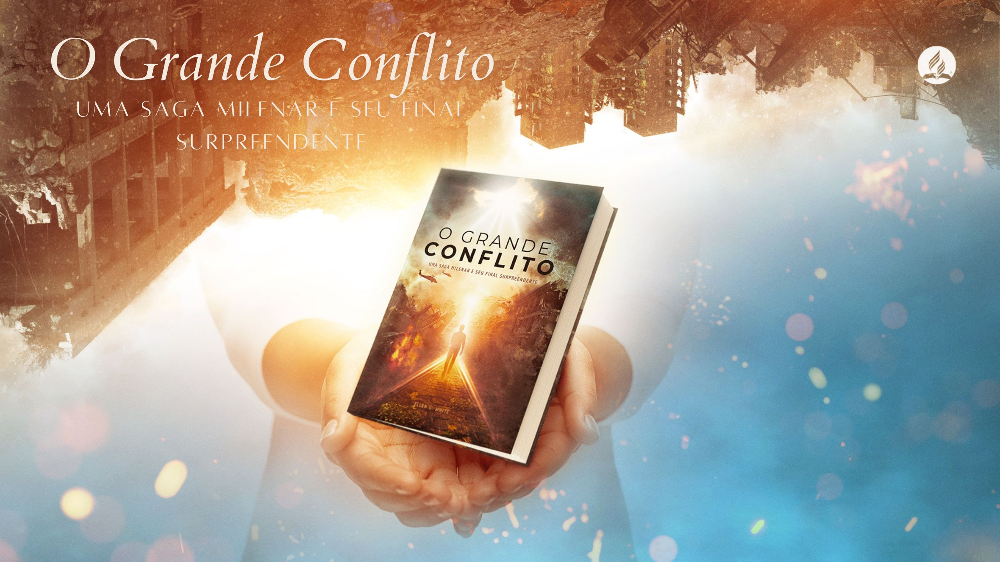

Livro que li: O Grande Conflito. Uma saga milenar e seu final surpreendente.
Este livro é uma leitura poderosa que explora a história do conflito entre o bem e o mal, desde o seu início até os eventos finais. Ele oferece uma visão profunda sobre a luta entre Cristo e Satanás, revelando os princípios por trás dos grandes movimentos religiosos e sociais. É um livro que expande a mente e fortalece a fé. É possível adquirir uma cópia do livro aqui.